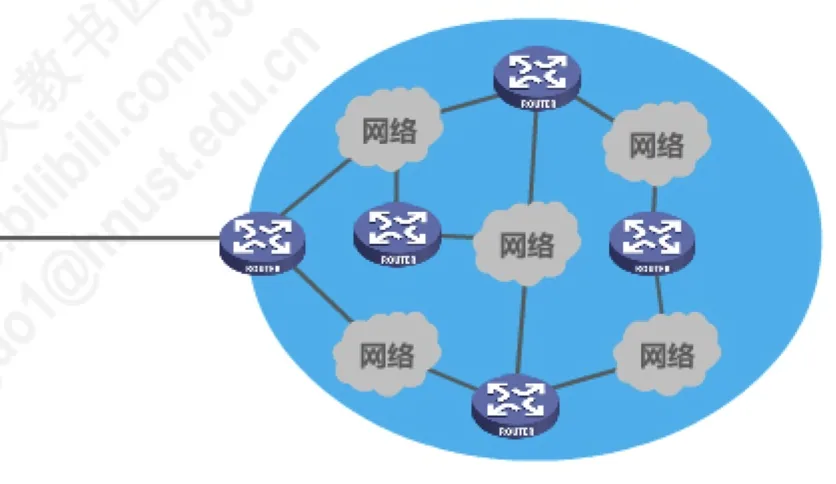
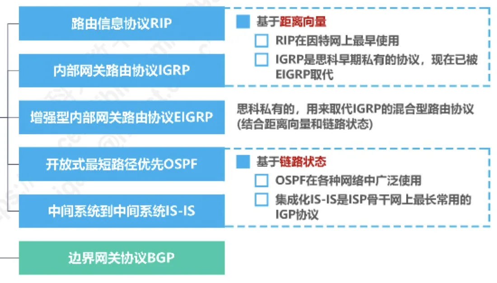
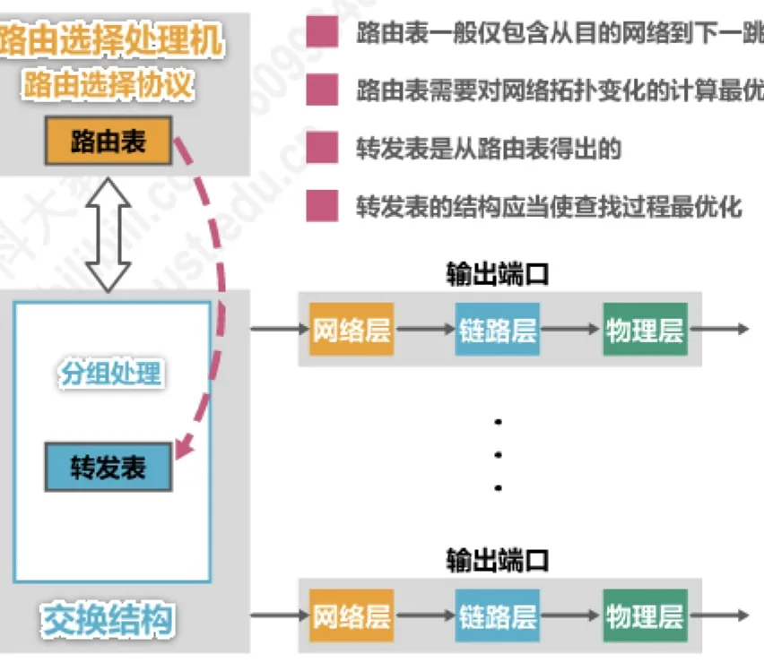

计算机通信与网络 · 第 4 章 网络层
4.6.1 路由选择协议概述
4.5 节讲的是人工配置的静态路由，它简单却「僵」——网络一变就得手工改。规模一大，就必须让路由器自己学。这一节是路由选择协议的总纲：先对比静态与动态两种路由选择，再看因特网的路由选择协议为什么是自适应、分布式、分层次的，接着认识 IGP 与 EGP 两大类协议，最后打开路由器看看路由选择协议在它的哪个部件里运行、路由表与转发表又是什么关系。
1. 静态路由选择与动态路由选择
路由信息的来源只有两条路：人工配置，或者由路由选择协议自动获取。
| 对比方面 | 静态路由选择 | 动态路由选择 |
|---|---|---|
| 路由信息来源 | 由人工配置的网络路由、默认路由、特定主机路由、黑洞路由等都属于静态路由 | 路由器通过路由选择协议自动获取路由信息 |
| 复杂程度与开销 | 简单、开销小 | 比较复杂、开销比较大 |
| 适应网络状态变化的能力 | 不能及时适应网络状态（流量、拓扑等）的变化 | 能较好地适应网络状态的变化 |
| 适用规模 | 一般只在小规模网络中采用 | 适用于大规模网络 |
二者的取舍很直观：静态路由省掉了协议运行的代价，却把维护工作留给了人；动态路由付出的是协议运行的复杂度和开销，换来的是网络变化时的自动调整。因特网这样规模巨大、时刻变化的网络，只能采用动态路由选择。
2. 因特网路由选择协议的主要特点
因特网所采用的路由选择协议有三个主要特点：
- 自适应——属于动态路由选择，能较好地适应网络状态的变化；
- 分布式——路由信息不是由某一台设备集中计算，而是由路由器之间互相交换路由信息得到；
- 分层次——将整个因特网划分为许多较小的自治系统 AS（Autonomous System），路由选择也相应分成两层来做。
3. 分层次的路由选择：自治系统与 IGP、EGP
把因特网划分为许多自治系统，是「分层次」这一特点的具体做法。一个自治系统是一个由单一机构管理、内部采用统一路由策略的网络集合；在自治系统内部和自治系统之间，使用的路由选择协议也不相同：
- 域内路由选择——自治系统内部的路由选择，使用内部网关协议 IGP（Interior Gateway Protocol），例如 RIP、OSPF；
- 域间路由选择——不同自治系统之间的路由选择，使用外部网关协议 EGP（Exterior Gateway Protocol），例如 BGP。

这样分层的道理不难理解：自治系统内部拓扑相对简单、目标统一，可以用较轻量的协议把路由算准；而自治系统之间既没有统一的管理者，也不适合互相暴露内部细节，因此需要一种只在边界上交换「可达性」信息、更强调策略而非最优路径的协议。后面的 4.6.2、4.6.3、4.6.4 三节就分别讲 RIP、OSPF 和 BGP。
4. 常见的路由选择协议
按 IGP 与 EGP 两大类，常见的路由选择协议可以列成下表。
| 分类 | 协议 | 主要特点 |
|---|---|---|
| 内部网关协议 IGP | 路由信息协议 RIP（Routing Information Protocol） | 基于距离向量；RIP 在因特网上最早使用 |
| 内部网关路由协议 IGRP（Interior Gateway Routing Protocol） | 思科早期私有的协议，现在已被 EIGRP 取代 | |
| 增强型内部网关路由协议 EIGRP（Enhanced IGRP） | 思科私有，用来取代 IGRP 的混合型路由协议（结合距离向量和链路状态） | |
| 开放式最短路径优先 OSPF（Open Shortest Path First） | 基于链路状态；OSPF 在各种网络中广泛使用 | |
| 中间系统到中间系统 IS-IS（Intermediate System to Intermediate System） | 集成化 IS-IS 是 ISP 骨干网上最常用的 IGP 协议 | |
| 外部网关协议 EGP | 边界网关协议 BGP（Border Gateway Protocol） | 用于不同自治系统之间的域间路由选择 |

其中 RIP 是理解动态路由的入门协议，它基于距离向量，也是因特网上最早使用的路由选择协议；OSPF 基于链路状态，在各类网络中广泛使用；集成化 IS-IS 则是 ISP 骨干网上最常用的 IGP 协议。IGRP 与 EIGRP 都是思科的私有协议，其中 EIGRP 是结合了距离向量与链路状态的混合型协议。
5. 路由器的基本结构
路由选择协议运行在路由器里，因此有必要看清路由器的内部构造。路由器由两部分组成：
- 路由选择部分——核心是路由选择处理机，其中运行着路由选择协议，并据此建立和维护路由表；
- 分组转发部分——由输入端口、交换结构、输出端口组成，负责把收到的分组从合适的端口送出去；每个端口内部又依次包含物理层、链路层和网络层。
一个分组在路由器内部的旅程是这样的：比特流从输入端口的物理层进入，经链路层还原成帧、再由网络层取出分组，交给交换结构，从选定的输出端口送出；输出端口再把分组封装成帧、变成比特流发到链路上。与此同时，如果输入端口收到的报文是路由选择协议的路由报文，它会被交给路由选择处理机去处理，用于更新路由表。

这里要特别区分路由表与转发表，它们的目标并不相同：
- 路由表一般仅包含从目的网络到下一跳的映射，它的任务是「算得对」，因此需要对网络拓扑变化的计算最优化；
- 转发表是从路由表得出的，它的任务是「查得快」，因此其结构应当使查找过程最优化。
分工的道理在于两者面对的压力不同：拓扑变化不频繁，但每一次计算都需要全局信息，所以要算得准；而转发分组是每时每刻都在发生的事，每一次都要查表，所以要让查找尽可能快。
本节小结
- 路由选择分静态与动态两类：静态路由由人工配置，简单、开销小但不能及时适应网络变化，只用于小规模网络；动态路由由路由选择协议自动获取路由信息，复杂、开销大但能较好适应网络变化，适用于大规模网络。
- 因特网的路由选择协议具有三个特点：自适应、分布式（路由器之间交换路由信息）、分层次（把因特网划分为许多自治系统 AS）。
- 因为分层次，路由选择分为域内路由选择（使用内部网关协议 IGP）与域间路由选择（使用外部网关协议 EGP）。
- 常见协议中，IGP 有 RIP（距离向量，最早使用）、IGRP 与 EIGRP（思科私有，EIGRP 为混合型）、OSPF（链路状态，广泛使用）、IS-IS（ISP 骨干网最常用）；EGP 主要是 BGP。
- 路由器由路由选择部分（路由选择处理机运行路由选择协议、维护路由表）与分组转发部分（输入端口、交换结构、输出端口）构成；分组经输入端口上到网络层后由交换结构送往输出端口，路由报文则交给路由选择处理机。
- 路由表负责算得对（面向拓扑变化的计算最优化），转发表由路由表得出、负责查得快（面向查找过程最优化）。